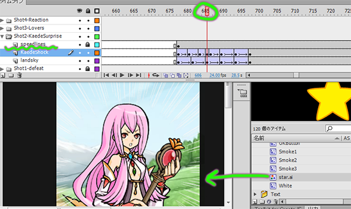
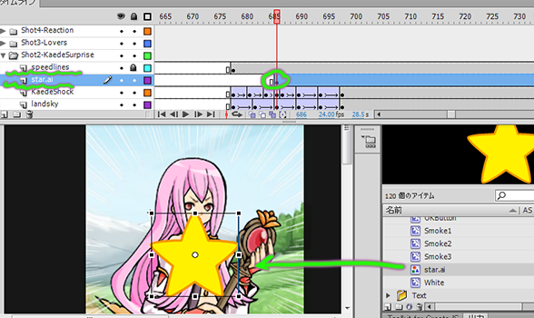

This command takes selected library items and puts them each on a new layer, properly named, with the first frame at the current time. This saves time for animators who would otherwise have to make new layers, name them appropriately, place objects on the stage, make a new key at the appropriate time, and delete prior keys.

A new layer is placed above the current one. The first keyframe is placed at the playhead, containing the selected library item. Works with multiple items/layers.
